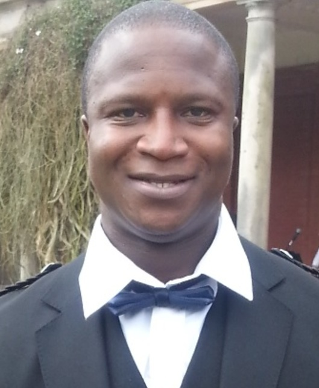

Our Legacy
The Legacy of Sheku Bayoh
Remembrance, justice, equality and positive change.

Rooted in heritage, built for belonging
Our Legacy
NABA's own legacy cannot be separated from Sheku's. His death, and the years his family spent fighting for truth and accountability, are why NABA exists in its current form — not just to signpost services, but to push for a Scotland where public institutions are fair, safe, and genuinely accountable to the people who rely on them.
Every training session we deliver, every policy we help an institution review, and every family we stand beside carries that same intention forward. Our legacy is theirs: a community that organised, that refused to be silent, and that turned grief into a lasting demand for change.
“Inclusivity is our strength.”
The legacy of Sheku Bayoh is one of remembrance, justice, equality and positive change.
Our organisation is dedicated to preserving Sheku's memory and supporting his family's vision that his legacy should help create a Scotland where everyone can access public services with dignity, fairness and respect. Where there is no room for injustice, discrimination or racism.
Sheku Bayoh was a 31-year-old father, son, brother and loved member of his family and community. His life was tragically cut short on 3 May 2015, following an incident in the street in Kirkcaldy involving officers of Police Scotland.
Sheku left behind his mother, sisters, two young sons and a close family who have spent years seeking answers, accountability and justice.
His story has had a profound impact on Scotland and has raised important questions about policing, race, equality, accountability and the treatment of communities by public institutions.
The Sheku Bayoh Inquiry
The Sheku Bayoh Inquiry was established to examine the circumstances surrounding Sheku's death and the subsequent response by the authorities.
The Inquiry's work includes examining:
- The immediate circumstances leading to the death of Sheku Bayoh.
- How the police dealt with the aftermath of his death.
- The subsequent investigation into his death.
- Whether race was a factor in the circumstances surrounding his death and the response to it.
- Any other matters considered relevant to the Inquiry's work.
The Inquiry also has the ability to make recommendations aimed at helping to prevent deaths in similar circumstances in the future.
The Inquiry represents an important opportunity to examine not only what happened to Sheku, but also the wider systems, policies, practices and institutional cultures that may affect how people from different racial and ethnic backgrounds experience public services.
From Remembrance to Change
Sheku's legacy must extend beyond remembrance.
For his family, his memory is connected to a clear and powerful principle: everyone should be able to access public services without fear of discrimination, prejudice or injustice.
This means creating institutions that listen to communities, recognise inequality and are willing to examine their own policies and practices. It means ensuring that people are treated fairly when they interact with the police, NHS, social care, education, housing, local government and other public services. And it means ensuring that concerns raised by individuals and communities are taken seriously.
Our work seeks to turn these principles into meaningful action.
Building Inclusive Public Services
Our organisation works in partnership with institutions and communities to help create more inclusive, equitable and culturally aware public services. We support organisations to:
Assess policies and practices — We work with institutions to examine how policies, procedures and organisational practices may affect different communities and whether unintended barriers or inequalities exist.
Deliver cultural awareness and anti-racism training — We provide opportunities for organisations and professionals to develop a deeper understanding of cultural difference, racism, unconscious bias, discrimination and the experiences of minority ethnic communities. Our aim is not simply to provide training, but to encourage meaningful organisational change.
Strengthen community engagement — Public services work best when they understand and listen to the communities they serve. We seek to create meaningful dialogue between public institutions and communities, ensuring that lived experience is recognised as an important part of developing better services.
Promote equality and accountability — We believe that equality must be reflected not only in policies but in everyday decisions, professional practice and organisational culture. Institutions must be willing to listen, learn and take responsibility when communities raise concerns.
A Legacy That Helps Others
Sheku's family have expressed a powerful vision for his legacy: that his death should help others access services fairly and that there should be no room for injustice. That vision is at the heart of our work.
We want Sheku's name to be associated not only with a tragic loss, but with a movement towards positive change. His legacy can help inspire a Scotland where:
- Everyone is treated with dignity and respect.
- Public services are accessible to all communities.
- Racism and discrimination are challenged rather than ignored.
- Institutions listen to the experiences of minority ethnic communities.
- Families and communities have meaningful opportunities to be heard.
- Policies are assessed for their impact on equality.
- Professionals are equipped to understand cultural differences.
- Concerns about discrimination are taken seriously.
- Accountability and transparency are strengthened.
- No family has to experience injustice without being heard.
Remembering Sheku
Sheku Bayoh was much more than the circumstances of his death.
- He was a son.
- He was a brother.
- He was a father.
- He was a friend.
- He was a member of a family and a community who loved him.
- His life mattered, and his memory continues to matter.
The work to honour Sheku's legacy is therefore about remembering the person behind the headlines while ensuring that the lessons arising from his death contribute to a fairer and more inclusive Scotland.
Our Commitment
We are committed to working with public institutions, community organisations, professionals, families and individuals to promote equality, inclusion and meaningful change.
We believe that inclusivity is our strength.
By listening to one another, challenging discrimination, improving institutional practice and building trust between communities and public services, we can help create a Scotland in which everyone has an equal opportunity to be heard, respected and treated fairly.
Sheku's legacy is not only about remembering what happened. It is about helping to build a future where injustice is challenged, equality is protected and every person can access public services with dignity and respect.
In memory of Sheku Bayoh.
For his family. For his children. For his community.
For a fairer Scotland.
Read next
See our anti-racism education work
NABA's ongoing partnership with Glasgow City Council Education, in memory of Sheku Bayoh and Stephen Lawrence.
Visit the News page →